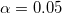
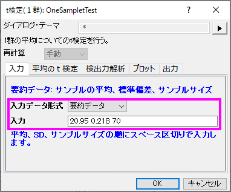

|
|
|
仮説検定は、標本のパラメータの品質を調べたり、特定のパラメーターの2つの標本の推定値が等しいかどうかをテストしたりするためによく使用されます。
パラメトリック法では、標本群が選ばれた母集団の分布について仮定され、それを元に検定が行われます。通常、データは正規分布から独立してサンプリングされる必要があります。
このチュートリアルでは、以下の項目について説明します。
| データ型 | 目的 | 手法 |
|---|---|---|
| 1群 | 与えられた値と平均の比較 | 1群のt検定 |
| 与えられた値と分散の比較 | 1群の分散検定 | |
| 2群 | 平均が等しいか検定する | 2群のt検定 |
| 分散が等しいか検定する | 2群の分散検定 | |
| 対応のある群 | 平均が等しいか検定する | 対応のあるt検定 |
製造業者が直径21mmの高品質なナットを製造するものとします。品質保持部門の担当者が完成品からランダムに120個のナットを回収します。それらの直径を計測し、その結果がDiameters.datファイルです。担当者はこの平均の直径が21㎜になるか検証したいとしましょう。 ナットの直径は過去の記録から正規分布に近い形で分布している事が分かっています。しかし、母集団の標準偏差は分かっていません。よって、1群のt検定を次の手順に沿って行います。
記述統計の表には、変数の標本数、平均、標準偏差、標準誤差が表示されます。標本平均である21.00459は仮説平均の21よりも少し大きく、平均値の標準誤差（SEM）は0.00156です。
検定の表から、t統計量 (2.9437) および関連するp値 (0.00404) は、ナットの直径の平均が のレベルで21と有意に異なることを表しています。
信頼区間は、95%の信頼性で変数の真の平均が区間[21.0015, 21.00769]内に含まれることを示しています。
要約データによる1群のt検定を実行するには、入力タブの入力データの形式を要約データに変更します。
今回、70個のナットを検定すると仮定しますので、サンプルサイズは70を入力します。計算を進めていくと、平均値20.95と標準偏差0.218を得られます。入力のボックスに、平均、標準偏差、サンプルサイズを入力します。</br> 
次に、平均のt検定タブの検定する平均として21を入力します。OKをクリックして実行します。
次のサマリー表が得られ、ここで調査した検定による平均は、母集団の平均と有意差があるとはいえないという結果になります。
2種類のタイヤの耐摩耗性を比較します。それぞれの種類のタイヤから、それぞれ8つずつタイヤをランダムに抜き取り、8つのペアにします。各ペアは、2種類のタイヤから抜き出されたものです。そして、摩耗テストを実施するために8つの平面にタイヤを用意し、対応のあるt 検定を行うために摩耗データを計測します。
t検定の表から、t統計量 (2.83119) およびそのp値 (0.02536) は、2つの平均間の差は有意である、つまり2種類のタイヤは異なる耐摩耗性を持つと示しています。
要約データによる対応のある群のt検定の実行
要約データによる対応のある群のt検定を実行するには、入力タブの入力データの形式を要約データに変更します。
今回、16のサンプルを検定すると仮定しますので、サンプルサイズは16を入力します。計算を進めていくと、対の平均の差305と、対のデータポイント間の標準偏差310を得られます（アルゴリズム：対応のあるｔ検定を参照してください）。入力のボックスに、平均、標準偏差、サンプルサイズを次のように入力します。
このデータは、有意水準0.05を下回る0.0013のp値を出力しているので、帰無仮説を棄却することが出来ます。
この検定で、2つの平均値は有意に異なっており、2種類のタイヤは異なる耐摩耗性を有していると分かります。
ある医師が2種類の睡眠薬の効果について調べています。薬の効果を調べるために20人の不眠症の患者がランダムに選ばれました。半分はA薬を、もう半分はB薬を処方され、薬を飲んだ後の睡眠時間を記録しました。その結果が time_raw.dat ファイルです。
2つの薬が患者に影響があるのか確認するため、独立した2群のt検定を次の手順で行います。
t検定の手順は自動的に2つの平均の違いを表します。片方は2つの標本の分散は等しいという仮定の元行われ、もう一方は等しくないという仮定で検定されます。この例では、両方の検定は、A薬とB薬の間に治療効果の差があるという十分な根拠はないということを示しています。（p値は0.0738と0.074なので、どちらも有意レベルである0.05よりも大きくなっているためです。）

要約データによる2群のt検定を実行するには、入力タブの入力データの形式を要約データに変更します。
今回、50人の患者を検定すると仮定しますので、サンプルサイズは50を入力します。計算を進めていくと、1番目の群の平均は2.33、標準偏差は1.858、2番目の群の平均は1.28、標準偏差は1.671と得られます。入力のボックスに、平均、標準偏差、サンプルサイズを次のように入力します。
平均のt検定タブで、信頼区間のレベルを95％にしてチェックを入れると、検定するグループ間の違いが計算されます。OKボタンをクリックして実行します。
このデータは、有意水準0.05を下回る0.0037のp値を出力しているので、帰無仮説を棄却することが出来ます。2つの患者グループの平均睡眠延長時間は同じではないことが分かります。実際に、1番目の睡眠薬のほうが患者に強い影響を与えると結論付けています。
信頼区間は、2つのグループ間の平均時間差が0.3487〜1.7513であることを95％信頼できると示しています。
均等な分散と不均等な分散の両方の仮定をサポートしています。この2群が等しい分散なのか確認するには、メニューから統計：仮説検定：2群の分散検定を選択して2群の分散検定を実行します。 |
結果より、P値=0.77181 >0.05なので、帰無仮説を棄却できません。 この2群の分散は有意に異ならないといえます。